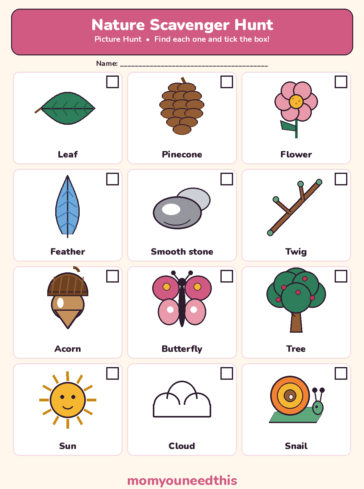
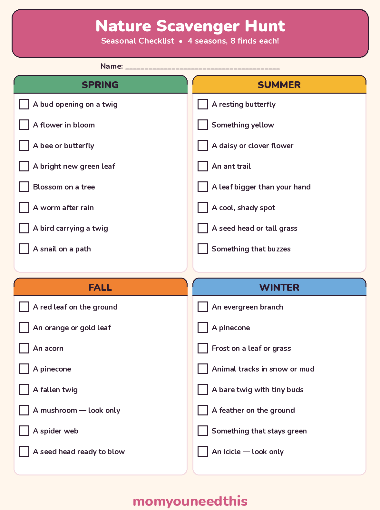

Nature Scavenger Hunt Printable Picture Hunt & Four Seasonal Lists for Park and Garden
A nature scavenger hunt printable for every season: a 12-picture hunt for little kids who cannot read yet, plus one seasonal checklist sheet with spring, summer, fall and winter lists. Hunt in a park or your own garden, tick what you spot, and leave everything growing where it is. No signup.
Last updated: October 25, 2026
Quick Answer
This nature scavenger hunt printable gives you a hunt for every season: a 12-picture sheet for little kids who cannot read yet, and one seasonal checklist with spring, summer, fall and winter lists of eight finds each. Take it to a park or use it in your own garden — spot, tick, and leave everything growing.
At a Glance
- Printables: 2 sheets
- Picture hunt: 12 items, pictures + words
- Seasonal checklist: 4 lists × 8 finds (32 in total)
- Ages: 2+ with an adult (picture), 5+ (seasonal lists)
- Where: A park, a garden, or a walk around the block
- Cost: Free — print at home
🌿 The Core Hunt: Use All Your Senses
A good scavenger hunt outside is not just about spotting shapes — it is about noticing. These 12 finds work in any season, in almost any park or garden.
The list mixes concrete finds (a leaf, a stone) with senses finds, and the senses finds are the ones children remember: something rough, something smooth, something that makes a sound when shaken. A child who has stood still to listen for birdsong has done the real work of this game.
1. A leaf with pointy edges
2. A leaf that is round
3. Something rough, like bark
4. Something smooth, like a stone
5. Something that makes a sound when shaken — a dry seed head, gently
6. Something yellow
7. Something taller than you
8. Something tiny that would fit in your palm (look — leave it there)
9. A shadow shaped like something else
10. A sound to stand still for: birdsong, wind or water
11. Something that smells like rain or earth
12. Something with stripes or spots
☀️ Summer note: in summer, swap in these eight finds — a resting butterfly, something yellow, a daisy or clover flower, an ant trail, a leaf bigger than your hand, a cool, shady spot, a seed head or tall grass, and something that buzzes. They are the summer panel on the printable checklist below, so the sheet and this list match exactly.
🧒 The Picture Hunt for Little Kids
A hunt a 2-year-old can actually play outdoors: every item is a picture first, so nobody has to read a word to join in.
The picture sheet holds 12 nature things a young child can really find — a leaf, a pinecone, a flower, a feather, a smooth stone, a twig, an acorn, a butterfly, a tree, the sun, a cloud and a snail. Your child carries the sheet, spots the real thing, and ticks its box. The sun and the cloud count too — looking up is part of noticing nature.
Little kids hunt with an adult. Walk together, read the word under each picture out loud, and let your child do the spotting and the ticking. Everything is looked at, not picked up — the rules section below explains how that works.

✂️ Download Your Free Picture Scavenger Hunt
12 nature pictures to find and tick — made for kids who cannot read yet.
⬇️ Download Free Picture Hunt 🖨️ Print🎁 Free printable for ages 2–5, with an adult
🍂 One Checklist, Four Seasons
One sheet to print once and use all year: spring, summer, fall and winter, eight finds each.
Each panel holds the finds that season actually offers — buds and blossom in spring, frost and animal tracks in winter. Hunt one panel per outing, or take on the brave version: the same walk, all four panels open, ticking whatever the year has left out for you. Two items carry a rule inside the list itself: a mushroom and an icicle are look-only finds — spotted, admired, ticked, never touched.

✂️ Download Your Free Seasonal Checklist
4 seasonal lists on one sheet — 8 finds per season, one sheet per hunter.
⬇️ Download Free Seasonal Checklist 🖨️ Print🎁 Free printable for ages 5+
🌸 Spring Scavenger Hunt
This spring scavenger hunt list is all about new growth — the season when the outdoors changes every single week.
1. A bud opening on a twig
2. A flower in bloom
3. A bee or butterfly
4. A bright new green leaf
5. Blossom on a tree
6. A worm after rain
7. A bird carrying a twig
8. A snail on a path
Spring finds move fast: a bud you tick this week is a leaf next week. Worms after rain and snails on the path are look-only in practice — watch where they are going, then let them get there.
🍂 Fall Scavenger Hunt
A fall scavenger hunt is the richest hunt of the year — the ground does half the work for you.
1. A red leaf on the ground
2. An orange or gold leaf
3. An acorn
4. A pinecone
5. A fallen twig
6. A mushroom — look only
7. A spider web
8. A seed head ready to blow
Call it an autumn scavenger hunt and it is exactly the same game — the red and gold leaves do not mind what the list is called. Fallen leaves, twigs, acorns and pinecones are already on the ground, so they may be picked up for a closer look, then put back where they were found. The mushroom stays look-only, always.
❄️ Winter Scavenger Hunt
The scavenger hunt winter list swaps flowers for frost — a quieter hunt, and the one that teaches the sharpest looking.
1. An evergreen branch
2. A pinecone
3. Frost on a leaf or grass
4. Animal tracks in snow or mud
5. A bare twig with tiny buds
6. A feather on the ground
7. Something that stays green
8. An icicle — look only
No snow where you live? The list still works: read “snow or mud” as mud, frost as early-morning frost on grass, and the icicle as the hardest find — worth a double tick on the rare morning it appears. Evergreens carry this hunt: they stay green and findable when everything else is bare.
🍃 Leave No Trace: Look, Photograph, Tick
The one rule that makes every hunt on this page work: nature stays where it lives.
Look, photograph or tick — do not pick. Wildflowers are left growing, because the next hunter — and the bees — need them there. Living things are never picked up, chased or taken home: a snail, a worm or a butterfly is a find the moment you spot it, and it stays in its home when you walk on.
Fallen things are the exception for close looking: a fallen leaf, twig, acorn or pinecone may be picked up, turned over and examined, then put back where it was found — it is somebody's food or shelter. If a find is too good to leave unrecorded, photograph it or draw it on the back of the sheet. That is the collection this hunt builds: pictures and ticks, not pockets full of nature.
🏞️ Park or Garden — and Safety First
A scavenger hunt outdoors works in both places — the finds change, the game does not.
In a park, the hunting ground is bigger and the finds are wilder: taller trees, longer grass, more birds. Agree the boundaries before you start — hunters stay where an adult can see them, stay on or beside paths, and never follow a find into bushes, water or a car park. In a garden, the same lists work on a smaller map: plant pots, a bird feeder corner and one good tree can carry a whole hunt, and a garden hunt can be replayed weekly to watch one place change with the season.
The safety rules are plain, and they come first. An adult walks the area before the hunt — checking for anything sharp, broken or unsafe, and agreeing where hunters may go. Never eat berries or mushrooms you find, and do not touch mushrooms at all — some wild berries and mushrooms can make children very sick, so they are look-and-tick finds only, every time. Add the basics: a hat and sunscreen on sunny days, a water bottle for every hunter, and hands washed when the hunt is over.
🖨️ How to Run Your Hunt
- Print the right sheet. Picture hunt for little kids who cannot read yet; the seasonal checklist for readers — one panel per outing, or all four for the brave version. One sheet per hunter, plus a pencil each.
- Check the area first. An adult walks the park corner or garden before the hunt: note any mushrooms or berries as look-only finds, check for anything sharp or broken, and agree the boundaries out loud.
- Say the Leave No Trace rule. Look, photograph or tick — wildflowers and living things are never picked. Fallen leaves, sticks and cones may be picked up for a look, then put back where they were found.
- Pair up the youngest hunters. Toddlers hunt with an adult or an older sibling: they carry the picture sheet, name each picture together, and the ticking is the toddler's job.
- Finish together. Count the ticks out loud, let every hunter name their favourite find, and crown the Nature Hunt Champion. Wash hands, drink water — a hunt that ends well gets asked for again next season.
🔍 More Hunts & Outdoor Fun
🏠 Indoor Scavenger Hunt
The rainy-day version: picture hunt, checklist and written clues for hunting around the house. Try the indoor hunt.
🎄 Christmas Scavenger Hunt
A festive picture hunt and checklist for the decorated house, plus a Christmas lights walk. See the Christmas hunt.
🤔 Riddles for Kids
Thinking games for kids who love working things out. Read the riddles.
🎨 Free Coloring Pages
Hundreds of free coloring sheets to print for every age. See the coloring pages.
❓ Nature Scavenger Hunt FAQ
What age is this nature scavenger hunt for?
The picture hunt suits ages 2 to 5 — the items are pictures with word labels, so a child who cannot read yet can still play, hunting alongside an adult. The seasonal checklist suits ages 5 and up: the finds are written, and the senses items (something rough, something that buzzes) keep older kids looking carefully too.
Is the nature scavenger hunt printable free?
Yes — both sheets are free to print at home, as many copies as your hunters need, with no signup. Print one per child so everyone ticks their own boxes, and keep a spare seasonal sheet for the next season.
Can we do this scavenger hunt in our own garden?
Yes — a garden works beautifully, especially for younger kids. Pots, one good tree, a patch of grass and a bird corner can carry the whole picture hunt, and the seasonal panels replay well in the same garden: watching one small place change across spring, summer, fall and winter is the best version of this game.
What if we can't find everything on our season's list?
That is normal — nature does not perform on schedule. Use the swap rule: a hunter may swap a missing find for something in the same family (a different shell or stone, a different kind of leaf) if an adult agrees it first. Or leave the last boxes empty and carry the same sheet back next week; spring and fall lists especially reward a second visit.
Can my child pick the things they find?
No — this hunt runs on Leave No Trace: look, photograph or tick, but do not pick wildflowers or take living things home. Fallen leaves, twigs, acorns and pinecones may be picked up for a closer look, then put back where they were found. And mushrooms and berries are never picked or eaten — they are look-only finds, because some can make children very sick.